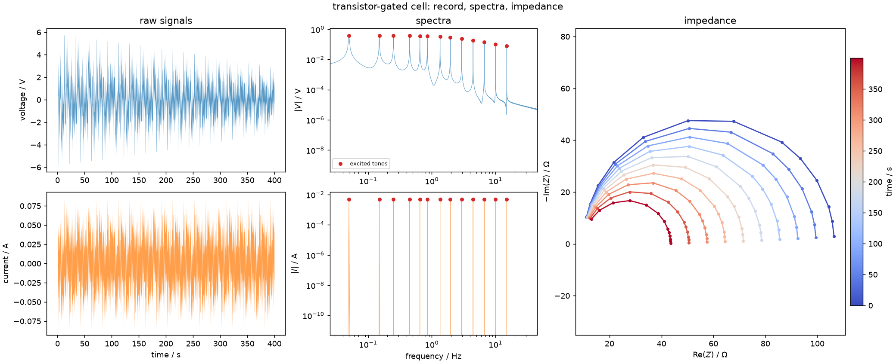

The signal model¶
This package sits between two fields that use different words for the same things. Electrochemistry speaks of impedance, cells and spectra; system theory speaks of transfer functions, plants and frequency responses. The code and the source papers use the system-theory vocabulary, so this page gives the translation first.
Notation¶
| symbol | meaning | notes |
|---|---|---|
| \(u(t)\), \(y(t)\) | excitation and response | here current and voltage, so \(Z = Y/U\) |
| \(Z(f,t)\) | the time-varying impedance | the quantity every estimator tries to recover |
| \(f_k\) | the \(k\)-th excited frequency | Hz |
| \(T_p\) | period of the multisine | s; \(f_{\min} = 1/T_p\) |
| \(P\) | number of periods in the record | the single most consequential choice |
| \(N\) | samples in the record | \(N = P \cdot f_s T_p\) |
| \(T\) | record duration | \(T = N/f_s = P \cdot T_p\) |
| \(f_s\) | sampling rate | Hz |
| \(k\) | DFT bin index | bins are \(1/T\) apart |
| \(h\) | harmonic number | tone \(h\) sits at bin \(h \cdot P\) |
| \(b_p(t)\) | the \(p\)-th Legendre basis function | \(b_p(t) = L_p(2t/T - 1)\) |
| \(H_p(f)\) | the \(p\)-th coefficient of \(Z(f,t)\) | what BLTVA estimates |
| \(N_p\) | order of the Legendre expansion | how much time structure the model can express |
| \(N_q\) | order of the trend polynomial at DC | how much drift it can absorb |
| \(N_a\) | order of the transient polynomial per band | chosen automatically |
A note on \(h\) versus \(k\) that causes real confusion: bltva takes harmonic
numbers, not frequencies and not bin indices. Harmonic \(h\) of a \(P\)-period
record occupies DFT bin \(h \cdot P\). So \(f_{\min}\), one harmonic, is \(P\) bins
wide in the spectrum — a fact that matters when choosing bandwidths and band
widths.
The model¶
A time-invariant system has one transfer function. A time-varying one does not, and the model this package uses expands it in time:
with \(b_p\) the Legendre polynomials on the record, rescaled so that \(b_p(t) = L_p(2t/T - 1)\).
Two properties make this a convenient basis rather than an arbitrary one:
- \(b_0 \equiv 1\), and every higher order has zero mean. So \(H_0(f)\) is the time-averaged impedance — the best stationary approximation of a cell that was not stationary — and every higher coefficient describes only change.
- The basis functions are real. That is what makes the frozen-time
synthesis exact for a linear time-varying system: because \(b_p(t)\) is real,
the sum over \(p\) and the sum over excited tones commute, so evaluating the
stationary formula at each instant gives the same answer as the full
time-varying convolution. This is why
simulate_legendrecan produce an exactly-known time-varying ground truth without integrating anything.
The convention has to be shared
The simulator and the estimator import the same legendre_basis from
deistools.processing.bltva. If they used different mean-removal
conventions, a comparison between them would measure the convention and
not the estimator. See conventions.
Skirts¶
This is the idea everything in the frequency domain rests on.
For a stationary system, a periodic excitation produces a response concentrated entirely on the excited DFT bins. Nothing lands in between.
For a time-varying system, the response at each tone is modulated by \(Z(f_k, t)\). Multiplication in time is convolution in frequency, so each excited line is smeared into its neighbouring bins — a skirt. The shape of that skirt is the spectrum of the variation.
That has two consequences:
- The skirts are the data. They are where the information about how the system changed actually lives. STFT ignores them; DMFA filters a band that contains them; BLTVA fits them explicitly.
- Leakage is indistinguishable from time variation. A record holding a non-integer number of periods also smears each line into its neighbours. No estimator can tell the two apart, which is why the integer-period requirement is not pedantry.
You can see the skirts directly in the voltage spectrum of any time-varying example — the second column of the standard three-panel figure. The current spectrum has none, because the excitation is exactly periodic.

The standard three-panel view, from 01_synth_transistor.py. Left: the
voltage envelope narrows as \(R_{ct}\) falls. Middle: each voltage tone has
grown skirts, while the current tones have none. Right: the impedance at a
series of instants, blue to red.
What each method does with them¶
| method | domain | what it does |
|---|---|---|
| STFT | time | cuts the record into windows and transforms each. Skirts are not used; the time resolution is the window length |
| DMFA | frequency | filters a band around each tone and transforms it back. Band width sets the time resolution |
| BLTVA | frequency | fits a model of the skirts, band by band, and returns the coefficients \(H_p\) |
The three differ in what they assume, which is the subject of the Methods pages.